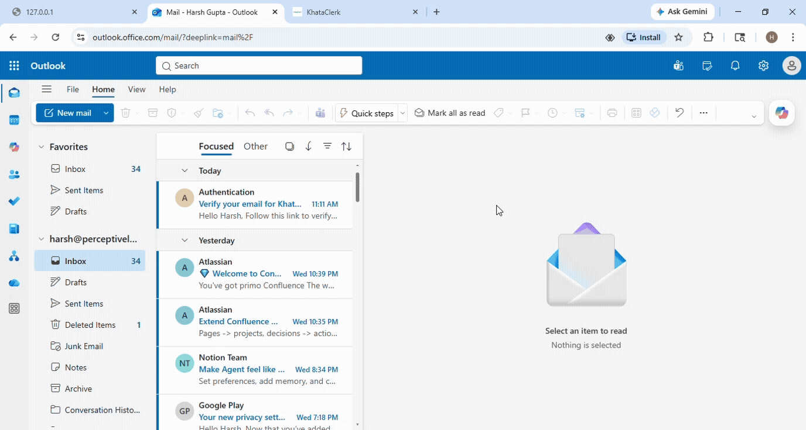
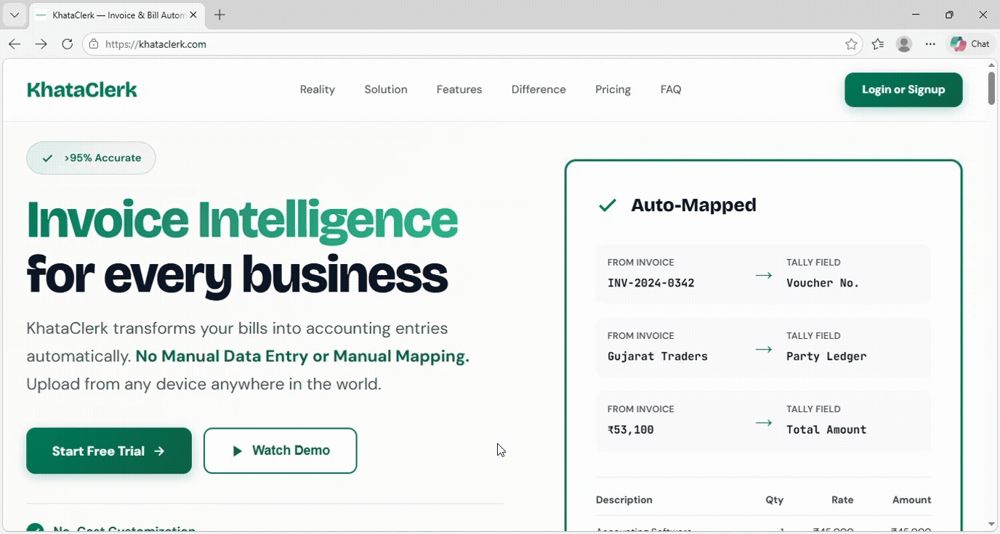
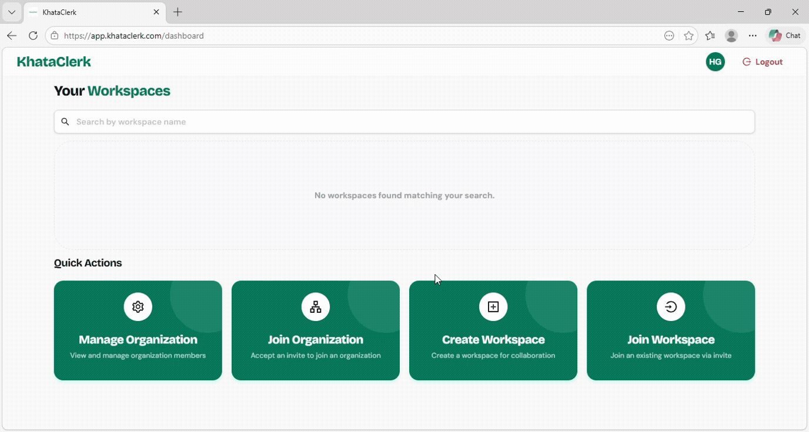
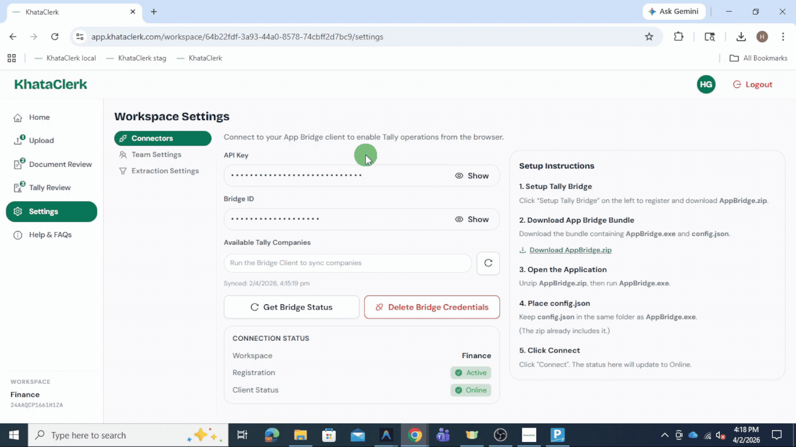
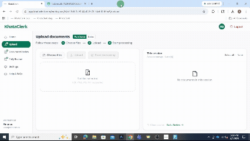
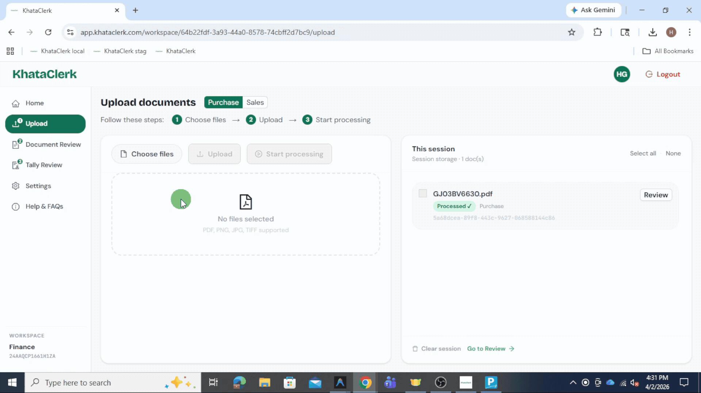
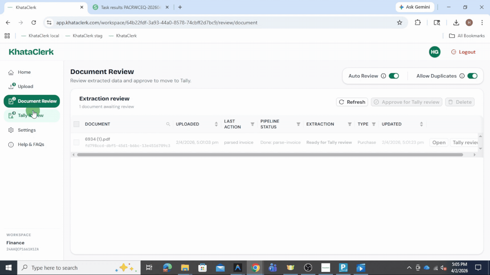

Complete Workflow
Follow this step-by-step guide to go from signup → invoice upload → push to Tally.
Signup
Go to the KhataClerk Login and create your account using Name,Email and Password.... Your password must have at least 8 characters, one lowercase and uppercase letter, one number, and one special character.

Verify Email
Check your inbox and verify your email before logging in. This ensures your account is secure. If you don't receive the email within 2 minutes, check your spam folder.

Login
Login using your credentials to access the dashboard. The KhataClerk dashboard is your central hub for all financial operations, giving you an immediate overview of your workspace

Create Workspace
Create a workspace to start processing invoices. Workspaces keep your firm's data securely isolated. You can invite team members to collaborate in a workspace directly from the settings menu later.

Download Tally Bridge
Go to settings → Setup Tally Bridge download the Tally Bridge → unzip and run it.... The Tally Bridge securely connects your local Tally software with our cloud. Leave the bridge utility running in the background while processing batches.

Verify Tally Bridge Connection
Verify that the Tally bridge connection is connected successfully. Check the connection status in your dashboard settings or the bridge utility window to ensure data can flow between KhataClerk and your local Tally setup.

Upload Invoice
Select invoice type → choose files → upload. You can select Multiple PDF or image files in bulk formats to save time. The system will automatically detect the document boundaries and queue them up.

Start Processing
Click "Start Processing" to extract invoice data using AI. Our cutting-edge AI engine natively parses complex line items, identifies vendor details, and calculates taxation grand totals within seconds.
Document Review
Review extracted data → approve invoices. While our AI boasts a 99% accuracy rate, taking a second look to spot-check extracted line items keeps your accounting ledger perfectly balanced. This step can be fully bypassed for trusted vendors.

Move to Tally Review
Approved invoices automatically move to Tally Review. Items pending final review are securely locked to prevent any further structural edits while waiting for the accounting head's approval.

Push to Tally
Select invoices → click "Push to Tally" → done. Clicking this synchronizes your fully approved invoices seamlessly into your live Tally ERP software via our secure integration bridge without any manual typing.

Hurray!
You have successfully uploaded and pushed your first invoice from KhataClerk.